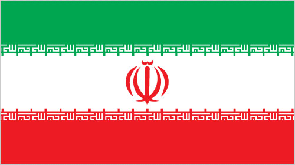
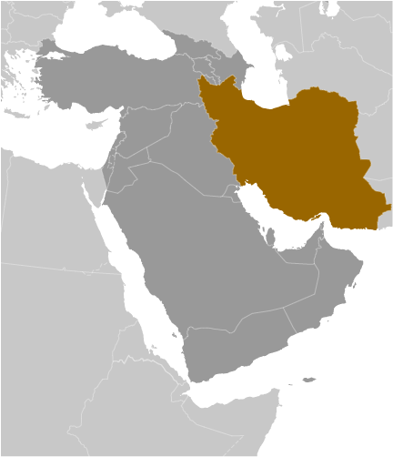

Middle East :: IRAN
Introduction :: IRAN
-
Known as Persia until 1935, Iran became an Islamic republic in 1979 after the ruling monarchy was overthrown and Shah Mohammad Reza PAHLAVI was forced into exile. Conservative clerical forces led by Ayatollah Ruhollah KHOMEINI established a theocratic system of government with ultimate political authority vested in a learned religious scholar referred to commonly as the Supreme Leader who, according to the constitution, is accountable only to the Assembly of Experts (AOE) - a popularly elected 86-member body of clerics. US-Iranian relations became strained when a group of Iranian students seized the US Embassy in Tehran in November 1979 and held embassy personnel hostages until mid-January 1981. The US cut off diplomatic relations with Iran in April 1980. During the period 1980-88, Iran fought a bloody, indecisive war with Iraq that eventually expanded into the Persian Gulf and led to clashes between US Navy and Iranian military forces. Iran has been designated a state sponsor of terrorism for its activities in Lebanon and elsewhere in the world and remains subject to US, UN, and EU economic sanctions and export controls because of its continued involvement in terrorism and concerns over possible military dimensions of its nuclear program. Following the election of reformer Hojjat ol-Eslam Mohammad KHATAMI as president in 1997 and a reformist Majles (legislature) in 2000, a campaign to foster political reform in response to popular dissatisfaction was initiated. The movement floundered as conservative politicians, supported by the Supreme Leader, unelected institutions of authority like the Council of Guardians, and the security services reversed and blocked reform measures while increasing security repression.Starting with nationwide municipal elections in 2003 and continuing through Majles elections in 2004, conservatives reestablished control over Iran's elected government institutions, which culminated with the August 2005 inauguration of hardliner Mahmud AHMADI-NEJAD as president. His controversial reelection in June 2009 sparked nationwide protests over allegations of electoral fraud, but the protests were quickly suppressed. Deteriorating economic conditions due primarily to government mismanagement and international sanctions prompted at least two major economically based protests in July and October 2012, but Iran's internal security situation remained stable. President AHMADI-NEJAD's independent streak angered regime establishment figures, including the Supreme Leader, leading to conservative opposition to his agenda for the last year of his presidency, and an alienation of his political supporters. In June 2013 Iranians elected a moderate conservative cleric Dr. Hasan Fereidun RUHANI to the presidency. He is a longtime senior member in the regime, but has made promises of reforming society and Iran's foreign policy. The UN Security Council has passed a number of resolutions calling for Iran to suspend its uranium enrichment and reprocessing activities and comply with its IAEA obligations and responsibilities, and in July 2015 Iran and the five permanent members, plus Germany (P5+1) signed the Joint Comprehensive Plan of Action (JCPOA) under which Iran agreed to restrictions on its nuclear program in exchange for sanctions relief. Iran held elections in 2016 for the AOE and Majles, resulting in a conservative-controlled AOE and a Majles that many Iranians perceive as more supportive of the RUHANI administration than the previous, conservative-dominated body. Iran will hold presidential elections in May 2017. RUHANI is currently favored to win a second term.
Geography :: IRAN
-
Middle East, bordering the Gulf of Oman, the Persian Gulf, and the Caspian Sea, between Iraq and Pakistan32 00 N, 53 00 EMiddle Easttotal: 1,648,195 sq kmland: 1,531,595 sq kmwater: 116,600 sq kmcountry comparison to the world: 19almost 2.5 times the size of Texas; slightly smaller than Alaskatotal: 5,894 kmborder countries (7): Afghanistan 921 km, Armenia 44 km, Azerbaijan 689 km, Iraq 1,599 km, Pakistan 959 km, Turkey 534 km, Turkmenistan 1,148 km2,440 km; note - Iran also borders the Caspian Sea (740 km)territorial sea: 12 nmcontiguous zone: 24 nmexclusive economic zone: bilateral agreements or median lines in the Persian Gulfcontinental shelf: natural prolongationmostly arid or semiarid, subtropical along Caspian coastrugged, mountainous rim; high, central basin with deserts, mountains; small, discontinuous plains along both coastsmean elevation: 1,305 melevation extremes: lowest point: Caspian Sea -28 mhighest point: Kuh-e Damavand 5,625 mpetroleum, natural gas, coal, chromium, copper, iron ore, lead, manganese, zinc, sulfuragricultural land: 30.1%arable land 10.8%; permanent crops 1.2%; permanent pasture 18.1%forest: 6.8%other: 63.1% (2011 est.)95,530 sq km (2012)population is concentrated in the north, northwest, and west, reflecting the position of the Zagros and Elburz Mountains; the vast dry areas in the center and eastern parts of the country, around the deserts of the Dasht-e Kavir and Dasht-e Lut, have a much lower population densityperiodic droughts, floods; dust storms, sandstorms; earthquakesair pollution, especially in urban areas, from vehicle emissions, refinery operations, and industrial effluents; deforestation; overgrazing; desertification; oil pollution in the Persian Gulf; wetland losses from drought; soil degradation (salination); inadequate supplies of potable water; water pollution from raw sewage and industrial waste; urbanizationparty to: Biodiversity, Climate Change, Climate Change-Kyoto Protocol, Desertification, Endangered Species, Hazardous Wastes, Marine Dumping, Ozone Layer Protection, Ship Pollution, Wetlandssigned, but not ratified: Environmental Modification, Law of the Sea, Marine Life Conservationstrategic location on the Persian Gulf and Strait of Hormuz, which are vital maritime pathways for crude oil transport
People and Society :: IRAN
-
82,021,564 (July 2017 est.)country comparison to the world: 17noun: Iranian(s)adjective: IranianPersian, Azeri, Kurd, Lur, Baloch, Arab, Turkmen and Turkic tribesPersian (official), Azeri Turkic and Turkic dialects, Kurdish, Gilaki and Mazandarani, Luri, Balochi, Arabic, otherMuslim (official) 99.4% (Shia 90-95%, Sunni 5-10%), other (includes Zoroastrian, Jewish, and Christian) 0.3%, unspecified 0.4% (2011 est.)0-14 years: 24.19% (male 10,154,424/female 9,690,512)15-24 years: 14.69% (male 6,174,435/female 5,878,475)25-54 years: 48.57% (male 20,316,773/female 19,522,673)55-64 years: 7.22% (male 2,920,111/female 2,999,525)65 years and over: 5.32% (male 2,026,594/female 2,338,042) (2017 est.)total dependency ratio: 40.2youth dependency ratio: 33.1elderly dependency ratio: 7.1potential support ratio: 14.2 (2015 est.)total: 30.3 yearsmale: 30 yearsfemale: 30.5 years (2017 est.)country comparison to the world: 1221.24% (2017 est.)country comparison to the world: 9317.9 births/1,000 population (2017 est.)country comparison to the world: 1015.3 deaths/1,000 population (2017 est.)country comparison to the world: 183-0.2 migrant(s)/1,000 population (2017 est.)country comparison to the world: 110population is concentrated in the north, northwest, and west, reflecting the position of the Zagros and Elburz Mountains; the vast dry areas in the center and eastern parts of the country, around the deserts of the Dasht-e Kavir and Dasht-e Lut, have a much lower population densityurban population: 74.4% of total population (2017)rate of urbanization: 1.78% annual rate of change (2015-20 est.)TEHRAN (capital) 8.432 million; Mashhad 3.014 million; Esfahan 1.88 million; Karaj 1.807 million; Shiraz 1.661 million; Tabriz 1.572 million (2015)at birth: 1.05 male(s)/female0-14 years: 1.05 male(s)/female15-24 years: 1.05 male(s)/female25-54 years: 1.04 male(s)/female55-64 years: 0.97 male(s)/female65 years and over: 0.86 male(s)/femaletotal population: 1.03 male(s)/female (2016 est.)25 deaths/100,000 live births (2015 est.)country comparison to the world: 123total: 15.9 deaths/1,000 live birthsmale: 17 deaths/1,000 live birthsfemale: 14.8 deaths/1,000 live births (2017 est.)country comparison to the world: 99total population: 74 yearsmale: 72.7 yearsfemale: 75.5 years (2017 est.)country comparison to the world: 1291.97 children born/woman (2017 est.)country comparison to the world: 12477.4% (2010/11)6.9% of GDP (2014)country comparison to the world: 841.49 physicians/1,000 population (2014)0.1 beds/1,000 population (2012)improved:urban: 97.7% of populationrural: 92.1% of populationtotal: 96.2% of populationunimproved:urban: 2.3% of populationrural: 7.9% of populationtotal: 3.8% of population (2015 est.)improved:urban: 92.8% of populationrural: 82.3% of populationtotal: 90% of populationunimproved:urban: 7.2% of populationrural: 17.7% of populationtotal: 10% of population (2015 est.)0.1% (2016 est.)country comparison to the world: 10366,000 (2016 est.)country comparison to the world: 524,000 (2016 est.)country comparison to the world: 34degree of risk: intermediatefood or waterborne diseases: bacterial diarrheavectorborne diseases: Crimean-Congo hemorrhagic fever (2016)25.8% (2016)country comparison to the world: 474.1% (2011)country comparison to the world: 932.9% of GDP (2015)country comparison to the world: 119definition: age 15 and over can read and writetotal population: 86.8%male: 91.2%female: 82.5% (2015 est.)total: 15 yearsmale: 15 yearsfemale: 15 years (2015)total: 26.1%male: 22.3%female: 42.8% (2015 est.)country comparison to the world: 44
Government :: IRAN
-
conventional long form: Islamic Republic of Iranconventional short form: Iranlocal long form: Jomhuri-ye Eslami-ye Iranlocal short form: Iranformer: Persiaetymology: name derives from the Avestan term "aryanam" meaning "Land of the noble [ones]"theocratic republicname: Tehrangeographic coordinates: 35 42 N, 51 25 Etime difference: UTC+3.5 (8.5 hours ahead of Washington, DC, during Standard Time)daylight saving time: +1hr, begins fourth Wednesday in March; ends fourth Friday in September31 provinces (ostanha, singular - ostan); Alborz, Ardabil, Azarbayjan-e Gharbi (West Azerbaijan), Azarbayjan-e Sharqi (East Azerbaijan), Bushehr, Chahar Mahal va Bakhtiari, Esfahan, Fars, Gilan, Golestan, Hamadan, Hormozgan, Ilam, Kerman, Kermanshah, Khorasan-e Jonubi (South Khorasan), Khorasan-e Razavi (Razavi Khorasan), Khorasan-e Shomali (North Khorasan), Khuzestan, Kohgiluyeh va Bowyer Ahmad, Kordestan, Lorestan, Markazi, Mazandaran, Qazvin, Qom, Semnan, Sistan va Baluchestan, Tehran, Yazd, Zanjan1 April 1979 (Islamic Republic of Iran proclaimed); notable earlier dates: ca. 550 B.C. (Achaemenid (Persian) Empire established); A.D. 1501 (Iran reunified under the Safavid Dynasty); 1794 (beginning of Qajar Dynasty); 12 December 1925 (modern Iran established under the PAHLAVI Dynasty)Republic Day, 1 April (1979)history: previous 1906; latest adopted 24 October 1979, effective 3 December 1979amendments: proposed by the supreme leader – after consultation with the Exigency Council – and submitted as an edict to the “Council for Revision of the Constitution,” a body consisting of various executive, legislative, judicial, and academic leaders and members; passage requires absolute majority vote in a referendum and approval of the supreme leader; articles including Iran’s political system, its religious basis, and its form of government cannot be amended; amended 1989 (2016)religious legal system based on secular and Islamic lawhas not submitted an ICJ jurisdiction declaration; non-party state to the ICCtcitizenship by birth: nocitizenship by descent only: the father must be a citizen of Irandual citizenship recognized: noresidency requirement for naturalization: 5 years18 years of age; universalchief of state: Supreme Leader Ali Hoseini-KHAMENEI (since 4 June 1989)head of government: President Hasan Fereidun RUHANI (since 3 August 2013); First Vice President Eshaq JAHANGIRI (since 5 August 2013)cabinet: Council of Ministers selected by the president with legislative approval; the supreme leader has some control over appointments to several ministrieselections/appointments: supreme leader appointed for life by Assembly of Experts; president directly elected by absolute majority popular vote in 2 rounds if needed for a 4-year term (eligible for a second term and an additional nonconsecutive term); election last held on 19 May 2017 (next to be held in 2021)election results: Hasan Fereidun RUHANI reelected president; percent of vote - Hasan Fereidun RUHANI (Moderation and Development Party) 50.7%, Mohammad Bagher GHALIBAF (PJP) 16.6%, Mohsen REZAI (Resistance Front of Islamic Iran) 10.6%, Saeed JALILI (Front of Islamic Revolutionary Stability 11.4% other 10.7%note: 3 oversight bodies are also considered part of the executive branch of governmentdescription: unicameral Islamic Consultative Assembly or Majles-e Shura-ye Eslami or Majles (290 seats; 285 members directly elected in single- and multi-seat constituencies by 2-round vote, and 1 seat each for Zoroastrians, Jews, Assyrian and Chaldean Christians, Armenians in the north of the country and Armenians in the South; members serve 4-year terms); note - all candidates to the Majles must be approved by the Guardians Council, a 12-member group of which 6 are appointed by the supreme leader and 6 are jurists nominated by the judiciary and elected by the Majleselections: first round held on 26 February 2016 and second round for 68 remaining seats held on 29 April 2016; (next full Majles election to be held in 2020)election results: percent of vote by coalition - List of Hope 37.2%, Principlists Grand Coalition 25.9%, People's Voice Coalition 4.5%, joint Hope/People’s Voice 4.1%, joint People’s Voice/Principlist 0.3%, religious minorities 1.7%, independent 26.4%; seats by coalition - List of Hope 108, Principlists Grand Coalition 75, People's Voice Coalition 13, joint Hope/People’s Voice 12, joint People’s Voice/Principlist 1, religious minorities 5, independent 76highest court(s): Supreme Court (consists of the president and NA judges)judge selection and term of office: Supreme Court president appointed by the head of the High Judicial Council (HJC), a 5-member body to include the Supreme Court chief justice, the prosecutor general, and 3 clergy, in consultation with judges of the Supreme Court; president appointed for a 5-year term; other judges appointed by the HJC; judge tenure NAsubordinate courts: Penal Courts I and II; Islamic Revolutionary Courts; Courts of Peace; Special Clerical Court (functions outside the judicial system and handles cases involving clerics); military courtsFollowers of Walayat [Ali LARIJANI]Front of Islamic Revolutionary Stability [Morteza AGHA-TEHRANI, general secretary]Pervasive Coalition of Reformists: The Second Step [Ali SOUFI, chairman] (includes Council for Coordinating the Reforms Front, National Trust Party, Union of Islamic Iran People Party, Moderation and Development Party)Principlists Grand Coalition [Alireza ZAKANI] (includes Combatant Clergy Association and Islamic Coalition Party, Society of Devotees and Pathseekers of the Islamic Revolution, Front of Islamic Revolution Stability)Progress and Justice Population of Islamic Iran or PJP [Hossein GHORBANZADEH, General Secretary]Resistance Front of Islamic Iran [Yadollah HABIBI, general secretary]political groups that support the Islamic Republic: Ansar-e HizballahDemocracy Party (Hezb-e Mardom Salari)Executives of Construction Party (Kargozaran)Followers of the Guardianship of the Jurisprudent (Rahrovan)Followers of the Line of the Imam and the Leader (Peyrovan)Islamic Iran Freedom Party (Hezb-e Azadegi)Islamic Coalition Party (Motalefeh)Islamic Labor Party (Hezb-e Kar)Militant Clerics Society or MCS (Ruhaniyun)Moderation and Development Party (Hezb-e Etedal va Tose-eh)Nation of Iran Unity Party (Hezb-e Etehad)National Trust Party (Hezb-e Etemad-e Meli)Qom Theological Lecturers AssociationReform Front Coordination Council (Shora-ye Hamahangi Eslahat)Society of Devotees (Isargaran)Society of Modern Thinking Muslim Women of Iran (Jamiat-e Zanan-e Noandish)Steadfastness Front (Paydari)Tehran Militant Clergy Association or MCA (Ruhaniyat)Voice of Iranians (Neda)Wayfarers of the Islamic Revolution (Rahpuyan);armed political groups repressed by the government: Democratic Party of Iranian Kurdistan or KDPIHarekat-e Ansar-e Iran (splinter faction of Jundallah)Jaysh l-Adl (formerly known as Jundallah)KomalaMojahedin-e Khalq Organization or MEK (MKO)People's FedayeenPeople's Free Life Party of Kurdistan or PJAKCICA, CP, D-8, ECO, FAO, G-15, G-24, G-77, IAEA, IBRD, ICAO, ICC (national committees), ICRM, IDA, IDB, IFAD, IFC, IFRCS, IHO, ILO, IMF, IMO, IMSO, Interpol, IOC, IOM, IPU, ISO, ITSO, ITU, MIGA, NAM, OIC, OPCW, OPEC, PCA, SAARC (observer), SCO (observer), UN, UNAMID, UNCTAD, UNESCO, UNHCR, UNIDO, UNITAR, UNWTO, UPU, WCO, WFTU (NGOs), WHO, WIPO, WMO, WTO (observer)none; note - Iran has an Interests Section in the Pakistani Embassy; address: Iranian Interests Section, Pakistani Embassy, 2209 Wisconsin Avenue NW, Washington, DC 20007; telephone: [1] (202) 965-4990; FAX [1] (202) 965-1073none; note - the US Interests Section is located in the Embassy of Switzerland, No. 39 Shahid Mousavi (Golestan 5th), Pasdaran Ave., Tehran, Iran; telephone [98] 21 2254 2178/2256 5273; FAX [98] 21 2258 0432three equal horizontal bands of green (top), white, and red; the national emblem (a stylized representation of the word Allah in the shape of a tulip, a symbol of martyrdom) in red is centered in the white band; ALLAH AKBAR (God is Great) in white Arabic script is repeated 11 times along the bottom edge of the green band and 11 times along the top edge of the red band; green is the color of Islam and also represents growth, white symbolizes honesty and peace, red stands for bravery and martyrdomlion; national colors: green, white, redname: "Soroud-e Melli-ye Jomhouri-ye Eslami-ye Iran" (National Anthem of the Islamic Republic of Iran)lyrics/music: multiple authors/Hassan RIAHInote: adopted 1990
Economy :: IRAN
-
Iran's economy is marked by statist policies, inefficiencies, and reliance on oil and gas exports, but Iran also possesses significant agricultural, industrial, and service sectors. The Iranian government directly owns and operates hundreds of state-owned enterprises and indirectly controls many companies affiliated with the country's security forces. Distortions - including inflation, price controls, subsidies, and a banking system holding billions of dollars of non-performing loans - weigh down the economy, undermining the potential for private-sector-led growth.Private sector activity includes small-scale workshops, farming, some manufacturing, and services, in addition to medium-scale construction, cement production, mining, and metalworking. Significant informal market activity flourishes and corruption is widespread.Fiscal and monetary constraints, following the expansion of international sanctions in 2012 on Iran's Central Bank and oil exports, significantly reduced Iran's oil revenue, forced government spending cuts, and sparked a sharp currency depreciation. Iran’s economy contracted for the first time in two decades during both 2012 and 2013, but growth resumed in 2014. Iran's stock market plunged between 2013 and 2015. Iran continues to suffer from high unemployment and underemployment. Lack of job opportunities has prompted many educated Iranian youth to seek employment overseas, resulting in a significant "brain drain."In June 2013, the election of President Hasan RUHANI generated widespread public expectations of economic improvement and greater international engagement. RUHANI has achieved some success, including reining in inflation and, in July of 2015, securing the promise of sanctions relief for Iran by signing the Joint Comprehensive Plan of Action (JCPOA) with the P5+1. The JCPOA, which severely limits Iran’s nuclear program in exchange for unfreezing Iranian assets and reopening Iran to international trade, should bolster foreign direct investment, increase trade, and stimulate growth.$1.549 trillion (2016 est.)$1.36 trillion (2015 est.)$1.367 trillion (2014 est.)note: data are in 2016 dollarscountry comparison to the world: 19$404.4 billion (2016 est.)12.5% (2016 est.)-1.6% (2015 est.)3.2% (2014 est.)country comparison to the world: 20$19,300 (2016 est.)$17,300 (2015 est.)$17,800 (2014 est.)note: data are in 2016 dollarscountry comparison to the world: 9237.6% of GDP (2016 est.)37.3% of GDP (2015 est.)43.6% of GDP (2014 est.)country comparison to the world: 9household consumption: 48.9%government consumption: 13.1%investment in fixed capital: 19.8%investment in inventories: 16.6%exports of goods and services: 22.4%imports of goods and services: -20.8% (2016 est.)agriculture: 9.8%industry: 34.3%services: 55.9% (2016 est.)wheat, rice, other grains, sugar beets, sugarcane, fruits, nuts, cotton; dairy products, wool; caviarpetroleum, petrochemicals, gas, fertilizer, caustic soda, textiles, cement and other construction materials, food processing (particularly sugar refining and vegetable oil production), ferrous and nonferrous metal fabrication, armaments24.7% (2016 est.)country comparison to the world: 229.75 millionnote: shortage of skilled labor (2016 est.)country comparison to the world: 22agriculture: 16.3%industry: 35.1%services: 48.6% (2013 est.)12.5% (2016 est.)10.5% (2015 est.)note: data are Iranian government numberscountry comparison to the world: 13618.7% (2007 est.)lowest 10%: 2.6%highest 10%: 29.6% (2005)44.5 (2006)country comparison to the world: 44revenues: $71.25 billionexpenditures: $80.58 billion (2016 est.)18.9% of GDP (2016 est.)country comparison to the world: 163-2.5% of GDP (2016 est.)country comparison to the world: 10213.4% of GDP (2016 est.)12.3% of GDP (2015 est.)note: includes publicly guaranteed debtcountry comparison to the world: 19321 March - 20 March9% (2016 est.)13.7% (2015 est.)note: official Iranian estimatecountry comparison to the world: 199NA%18% (31 December 2016 est.)14.21% (31 December 2015 est.)country comparison to the world: 22$47.59 billion (31 December 2016 est.)$38.44 billion (31 December 2015 est.)country comparison to the world: 52$366 billion (31 December 2016 est.)$307.1 billion (31 December 2015 est.)country comparison to the world: 27$315.4 billion (31 December 2016 est.)$259.7 billion (31 December 2015 est.)country comparison to the world: 35$89.43 billion (31 December 2015 est.)$116.6 billion (31 December 2014 est.)$345.8 billion (31 December 2013 est.)country comparison to the world: 41$16.39 billion (2016 est.)$9.016 billion (2015 est.)country comparison to the world: 17$83.98 billion (2016 est.)$64.6 billion (2015 est.)country comparison to the world: 38petroleum 80%, chemical and petrochemical products, fruits and nuts, carpets, cement, oreChina 30.1%, India 16.7%, South Korea 9.7%, Turkey 9.5%, Japan 6.8% (2016)$63.14 billion (2016 est.)$52.42 billion (2015 est.)country comparison to the world: 44industrial supplies, capital goods, foodstuffs and other consumer goods, technical servicesUAE 27.4%, China 13.2%, Turkey 7.8%, South Korea 4.3%, Germany 4% (2016)$133.7 billion (31 December 2016 est.)$116 billion (31 December 2015 est.)country comparison to the world: 19$8.196 billion (31 December 2016 est.)$6.321 billion (31 December 2015 est.)country comparison to the world: 118$46.02 billion (31 December 2016 est.)$43.05 billion (31 December 2015 est.)country comparison to the world: 58$4.656 billion (31 December 2016 est.)$4.097 billion (31 December 2015 est.)country comparison to the world: 72Iranian rials (IRR) per US dollar -30,914.9 (2016 est.)30,914.9 (2015 est.)29,011.5 (2014 est.)25,912 (2013 est.)12,176 (2012 est.)
Energy :: IRAN
-
population without electricity: 1,100,000electrification - total population: 98.6%electrification - urban areas: 100%electrification - rural areas: 95% (2013)265.1 billion kWh (2015 est.)country comparison to the world: 17220.9 billion kWh (2015 est.)country comparison to the world: 196.822 billion kWh (2015 est.)country comparison to the world: 294.148 billion kWh (2015 est.)country comparison to the world: 4672.94 million kW (2015 est.)country comparison to the world: 1683.2% of total installed capacity (2015 est.)country comparison to the world: 801.3% of total installed capacity (2015 est.)country comparison to the world: 3113.9% of total installed capacity (2015 est.)country comparison to the world: 1090.2% of total installed capacity (2015 est.)country comparison to the world: 1604.068 million bbl/day (2016 est.)country comparison to the world: 51.342 million bbl/day (2014 est.)country comparison to the world: 1233,710 bbl/day (2014 est.)country comparison to the world: 60158.4 billion bbl (1 January 2017 es)country comparison to the world: 41.801 million bbl/day (2014 est.)country comparison to the world: 121.922 million bbl/day (2015 est.)country comparison to the world: 13272,600 bbl/day (2014 est.)country comparison to the world: 2847,750 bbl/day (2014 est.)country comparison to the world: 85184.8 billion cu m (2015 est.)country comparison to the world: 3186 billion cu m (2015 est.)country comparison to the world: 98.38 billion cu m (2015 est.)country comparison to the world: 259.55 billion cu m (2015 est.)country comparison to the world: 2933.5 trillion cu m (1 January 2017 es)country comparison to the world: 2650.4 million Mt (2014 est.)country comparison to the world: 8
Communications :: IRAN
-
total subscriptions: 30,818,011subscriptions per 100 inhabitants: 37 (July 2016 est.)country comparison to the world: 10total: 74.219 millionsubscriptions per 100 inhabitants: 91 (July 2016 est.)country comparison to the world: 22general assessment: currently being modernized and expanded with the goal of not only improving the efficiency and increasing the volume of the urban service but also bringing telephone service to several thousand villages not presently connecteddomestic: heavy investment by Iran's state-owned telecom company has greatly improved and expanded both the fixed-line and mobile cellular networks; a huge percentage of the cell phones in the market have been smuggled into the countryinternational: country code - 98; submarine fiber-optic cable to UAE with access to Fiber-Optic Link Around the Globe (FLAG); Trans-Asia-Europe (TAE) fiber-optic line runs from Azerbaijan through the northern portion of Iran to Turkmenistan with expansion to Georgia and Azerbaijan; HF radio and microwave radio relay to Turkey, Azerbaijan, Pakistan, Afghanistan, Turkmenistan, Syria, Kuwait, Tajikistan, and Uzbekistan; satellite earth stations - 13 (9 Intelsat and 4 Inmarsat) (2015)state-run broadcast media with no private, independent broadcasters; Islamic Republic of Iran Broadcasting (IRIB), the state-run TV broadcaster, operates 5 nationwide channels, a news channel, about 30 provincial channels, and several international channels; about 20 foreign Persian-language TV stations broadcasting on satellite TV are capable of being seen in Iran; satellite dishes are illegal and, while their use had been tolerated, authorities began confiscating satellite dishes following the unrest stemming from the 2009 presidential election; IRIB operates 8 nationwide radio networks, a number of provincial stations, and an external service; most major international broadcasters transmit to Iran (2009).irtotal: 36.07 millionpercent of population: 44.1% (July 2016 est.)country comparison to the world: 26
Transportation :: IRAN
-
number of registered air carriers: 15inventory of registered aircraft operated by air carriers: 228annual passenger traffic on registered air carriers: 15,003,958annual freight traffic on registered air carriers: 107,184,869 mt-km (2015)EP (2016)319 (2013)country comparison to the world: 22total: 140over 3,047 m: 422,438 to 3,047 m: 291,524 to 2,437 m: 26914 to 1,523 m: 36under 914 m: 7 (2017)total: 179over 3,047 m: 12,438 to 3,047 m: 21,524 to 2,437 m: 9914 to 1,523 m: 135under 914 m: 32 (2013)26 (2013)condensate 7 km; condensate/gas 973 km; gas 20,794 km; liquid petroleum gas 570 km; oil 8,625 km; refined products 7,937 km (2013)total: 8,483.5 kmbroad gauge: 94 km 1.676-m gaugestandard gauge: 8,389.5 km 1.435-m gauge (189.5 km electrified) (2014)country comparison to the world: 25total: 198,866 kmpaved: 160,366 km (includes 1,948 km of expressways)unpaved: 38,500 km (2010)country comparison to the world: 27850 km (on Karun River; some navigation on Lake Urmia) (2012)country comparison to the world: 69total: 76by type: bulk carrier 8, cargo 51, chemical tanker 3, container 4, liquefied gas 1, passenger/cargo 3, petroleum tanker 2, refrigerated cargo 2, roll on/roll off 2foreign-owned: 2 (UAE 2)registered in other countries: 71 (Barbados 5, Cyprus 10, Hong Kong 3, Malta 48, Panama 5) (2010)country comparison to the world: 61major seaport(s): Bandar-e Asaluyeh, Bandar Abbas, Bandar Emamcontainer port(s) (TEUs): Bandar Abbas (2,752,460)
Military and Security :: IRAN
-
2.69% of GDP (2015)2.33% of GDP (2014)2.35% of GDP (2013)2.81% of GDP (2012)2.41% of GDP (2011)Islamic Republic of Iran Regular Forces (Artesh): Ground Forces, Navy, Air Force (IRIAF), Khatemolanbia Air Defense Headquarters; Islamic Revolutionary Guard Corps (Sepah-e Pasdaran-e Enqelab-e Eslami, IRGC): Ground Resistance Forces, Navy, Aerospace Force, Qods Force (special operations); Law Enforcement Forces (2015)18 years of age for compulsory military service; 16 years of age for volunteers; 17 years of age for Law Enforcement Forces; 15 years of age for Basij Forces (Popular Mobilization Army); conscript military service obligation is 18 months; women exempt from military service (2012)
Transnational Issues :: IRAN
-
Iran protests Afghanistan's limiting flow of dammed Helmand River tributaries during drought; Iraq's lack of a maritime boundary with Iran prompts jurisdiction disputes beyond the mouth of the Shatt al Arab in the Persian Gulf; Iran and UAE dispute Tunb Islands and Abu Musa Island, which are occupied by Iran; Azerbaijan, Kazakhstan, and Russia ratified Caspian seabed delimitation treaties based on equidistance, while Iran continues to insist on a one-fifth slice of the sea; Afghan and Iranian commissioners have discussed boundary monument densification and resurveyrefugees (country of origin): 2.5-3.0 (1 million registered, 1.5-2.0 million undocumented) (Afghanistan); 28,268 (Iraq) (2016)current situation: Iran is a source, transit, and destination country for men, women, and children subjected to sex trafficking and forced labor; organized groups sex traffic Iranian women and children in Iran and to the UAE and Europe; the transport of girls from and through Iran en route to the Gulf for sexual exploitation or forced marriages is on the rise; Iranian children are also forced to work as beggars, street vendors, and in domestic workshops; Afghan boys forced to work in construction or agriculture are vulnerable to sexual abuse by their employers; Pakistani and Afghan migrants being smuggled to Europe often are subjected to forced labor, including debt bondagetier rating: Tier 3 – Iran does not comply with the minimum standards for the elimination of trafficking, and is not making significant efforts to do so; the government does not share information on its anti-trafficking efforts, but publically available information from NGOs, the media, and international organizations indicates that Iran is not taking adequate measures to address its trafficking problems, particularly protecting victims; Iranian law does not prohibit all forms of human trafficking; female victims find it extremely difficult to get justice because Iranian courts accord women’s testimony half the weight of men's, and female victims of sexual abuse, including trafficking, are likely to be prosecuted for adultery; the government did not identify or provide protection services to any victims and continued to punish victims for unlawful acts committed as a direct result of being trafficked; the government made some effort to cooperate with neighboring governments and an international organization to combat human trafficking and other crimes (2015)despite substantial interdiction efforts and considerable control measures along the border with Afghanistan, Iran remains one of the primary transshipment routes for Southwest Asian heroin to Europe; suffers one of the highest opiate addiction rates in the world, and has an increasing problem with synthetic drugs; regularly enforces the death penalty for drug offences; lacks anti-money laundering laws; has reached out to neighboring countries to share counter-drug intelligence